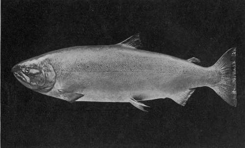

Memorandum On Comparative Conditions. Part 3
Description
This section is from the book "Salmon Fishing", by W. Earl Hodgson. Also available from Amazon: Salmon Fishing.
Memorandum On Comparative Conditions. Part 3
"My own opinion is that the salmon in Newfoundland would greatly benefit by the Government leasing rivers to private persons under the conditions on which the Canadian rivers are leased.
"Of salmon on the Pacific Coast we find six varieties-the King or Spring Salmon, the Cohoe, the Steelhead, the Humpback, the Dog Salmon, and the Sockeye. Only the first three will take a lure, and I have caught the cohoe on the fly only. The steel-head I have never fished for; but I understand that it is very game, and plentiful in the rivers of Oregon and California. The king salmon, up to 50 lbs., I have caught on a spoon bait in the salt water at the mouths of rivers. The record for one caught on a rod is 72 lbs. These salmon run during July and August. The cohoe I have many times caught on a fly in the estuary of a river. Sometimes he reaches 22 lbs.; but his average is between 8 lbs. and 12 lbs.
" When I last passed through Vancouver city, Mr. A. Brougham, one of the best amateur fly-tiers, who resides in Vancouver, told me he had heard of a river, lately discovered, on Vancouver Island, where the spring salmon had been caught on a fly. For his size, however, the cohoe, I think, is the more sporting fish. In fact, I would not put him second even to salmo solar in point of gameness. As regards appearance he is similar. His flesh, however, is a deeper pink. The flesh of the king salmon is the most like that of the Atlantic salmon. I found that the cohoe took any silver-bodied fly, and that No. 4 or No. 5 was the best.
"Judging from facts I gathered on the Pacific Coast in 1903, I fancy that the canning business is being overdone, and that it is bringing about deterioration of the stock. New canneries are being built every year.
"It is, I believe, a fact that the Pacific salmon remain in the sea for four years before returning to the river they were born in, and that then they only go back to spawn and die. I have myself seen salmon so thick in a small river in British Columbia, perhaps not more than 18 inches deep, that one could not wade across without touching them at every step. Instinct seems to make them run up the rivers as far as they possibly can. I have even seen one going on when his back fin was out of water and there was no deeper channel ahead. Of course, it is impossible to say whether such fish as that are the same that left the river as smolts. All that is certainly known is that their only instinct seems to be to get as far as possible up the river, to spawn and die.
I am, Yours sincerely,
Bryan Leighton."
In that letter there are two astonishing statements. They are that Newfoundland salmon spawn in still water, and that fish remain kelts after having been six weeks in salt water. In answer to a note on these points, Sir Bryan Leighton, wrote:-
" Passing through Nice, 9th March 1906.
" Dear Hoddy,-I did not mean to convey to you in my letter that the salmon actually spawned in the lakes at the head of the Newfoundland rivers. I do not profess to know where they actually carry out the sexual function; but in August and September they congregate in large numbers in these lakes just before the spawning season. In the two instances I know of from personal observation they cannot, owing to high falls, get any farther than the lake.
Whether they come down again before spawning, or spawn in the lake, I leave to wiser heads than mine. I can only state what I have seen. As regards the mended kelts, as the natives term them, I am positive that these fish have been to the salt water. They are just like bars of silver, with every scale perfect. How long they have been in the salt water I do not profess to know. My own theory is that they get caught in the ice and have to spend the winter in the river, or rather in the lake at the river head, and as soon as the river is clear of ice go to the sea, which, after having spent so much time in ice-cold water, they feel unsuited to their condition, and so quickly return to the rivers. I am quite open to argument on the subject, however. Their flesh is much whiter than that of the ordinary salmon; but they fight well, and not like an ordinary kelt. . . .
Yours ever,
Bryan Leighton."
A very bright coat is no evidence that a salmon is not a kelt. In British rivers, as spring advances, many kelts become brighter than are the fresh-run fish. On the other hand, Lady Leighton mentions that the peculiar salmon under discussion had sea-lice on them, and that seems absolute proof of Sir Bryan's theory. From Newfoundland, then, we have received two very interesting problems, curiosity about which may possibly result in important discoveries as to the habits of salmon generally.
As regards South Africa, our information is at present meagre. The Assistant Colonial Secretary in the Orange River Colony wrote:-
The Largest Salmon Known To Have Been Caught By A Lady
Spring or King Salmon caught on a spoon bait by Lady Leighton in the Campbell River, Vancouver Island, in August, 1903. Weight, 54½ lbs. ; length, 47 inches ; girth, 29 inches.
" Bloemfontein, 13th February 1906.
"My Dear Hodgson,-I am delighted to hear from you again-but first as to business. In the rivers that flow through my particular region there are no fish of the salmon kind. Indeed, the rivers are unsuitable for these lively fish-owing to their habit of being dry for most part of the year. A breed likely to do well in our Orange River Colony must needs be amphibious, and that variety has not yet been found. In Natal, I believe, much has been done. I shall be in Pietermaritzburg in March, and I will ask some of the Natalians how the trout fare, and report the result. I will also inquire in the Transvaal. . . .
Yours ever,
Basil Blackwood."
At the time of going to press, I am sorry to say, the particularised accounts from Natal and the Transvaal are still to come. Meanwhile it is pleasant to notice in the newspapers reports to the effect, that attempts to acclimatise British fish in certain streams of the South African Colonies are successful in unexpected measure.
As regards another part of the Empire, our chronicle, though very important in one respect, is brief. The enthusiastic sportsman who was Governor and Commander-in-Chief in South Australia for a period from 1889, wrote:-
"St. James's Club, Piccadilly, W.. 23rd February 1906.
" Dear Mr. Hodgson, ... I should have been proud to send you some notes on salmon fishing in Australia were there any salmon in those waters.
Trout and some salmon are to be found in New Zealand and Tasmania, and splendid fish they are; but I have little local knowledge.
Yours truly,
Kintore."
It was, of course, about New Zealand and Tasmania that I had really hoped to hear. Endeavours to stock the rivers of those lands with salmon, trout, and char began in 1864; and the Proceedings of the Zoological Society of London, in common with other learned works, recount gratifying results. The char and the rainbow trout have not taken kindly to the Antipodes; but, as Lord Kintore indicates, not all the salmon have disappeared, and the brown trout flourish amazingly. These fish reach enormous size, and, unlike the trout here at home, which generally give over rising at fly when they become very large, they do not cease to be active as they grow. That might be accounted for by the fact, illustrated in every new lake formed in order that a town may be supplied with water, that trout in a fresh place always tend to thrive and to be much more vigorous than their forbears; but there is a further wonder in New Zealand and Tasmania, which cannot be stated more appositely than in a sentence from Sir Herbert Maxwell. "They have acquired a sea-going habit precisely analogous to our salmon, and are taken in nets at sea of great size and with a silvery marine livery.,, It thus appears that, while salmon may not feed in the rivers or the lakes, trout feed abundantly in the sea. Is this a clue to the mystery discussed in our second chapter? In size, ways, and appearance, British trout in the waters of the Antipodes have become almost indistinguishable from salmon. Is it possible that salmon and trout are in reality fish of the same race, sprung from a uniform stock ? If this be so, we can readily understand why, when in river or lake, salmon rise during the daily feeding-times of the trout. They and the trout are following the habit of a common ancestor.
Continue to:
- prev: Memorandum On Comparative Conditions. Part 2
- Table of Contents
- next: Chapter XI. Storage And Passes
Tags
salmon, fish, river, fishing, trout, loch, flies, fishing flies